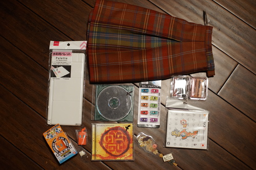
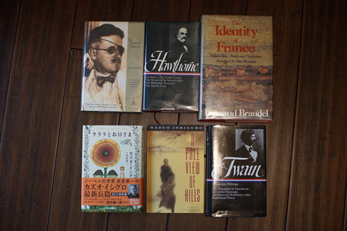
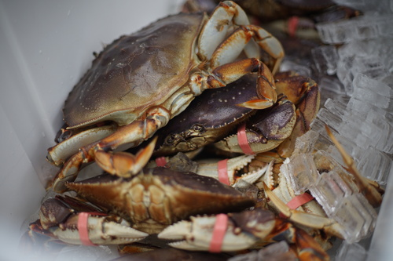
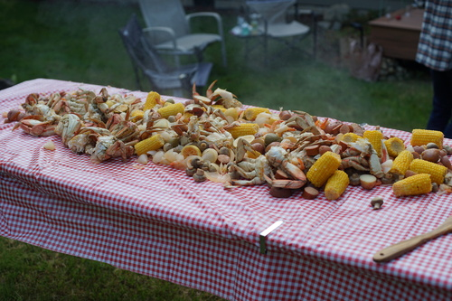
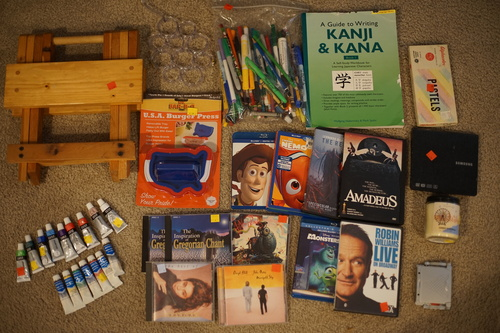

Seattle haul?!? kohi and i (and both of our bfs) went to seattle for some shopping! we ditched the boys for most of the trip (or did they ditch us?)
I was shocked at how nicely this was made! it's 100% wool and lined. found at goodwill university district
there is absolutely no reason for me to need more than 2.
i really wanted a little rotom dex and i was terrified that it was blind box, but each pokemon had a different box so i was confident enough to buy it. it's hollow but now i have a doll sized rotodex
these 6 sticks probably cost twice as much as the whole box i was given when i was 10
free with purchase of book. i didnt purchase a book...
I've seen these tiny clips in doll sewing videos and i couldnt for the life of me figure out where they were getting them or what they were actually for
I paid using Ryan's store credit. pink gorilla is not particularly good at fraud detection. thanks Ryan!
i made my friend buy it for me because i had no quarters. everyone proceeded to make fun of me later so i guess i paid in laughs
driving into u district, i spotted a sign for an art supply store UNDER petco?! idk how ive never noticed it before. i used to live in this neighborhood and never thought twice about it. it was even the petco i bought 3 of my marimo at! we did our rounds of the ave and then checked it out. it was HUGE and they had so much stuff!!
but, kohi and I were all hyped up to go to blick. so we held out at the art supply store in the university district. it was a huge mistake! the one in the u district was so much bigger even though it was slightly over blick's online prices. we got to blick 30 minutes before closing. i scrambled to search out gouache paints and pastels while kohi picked out alcohol markers. they didnt actually have any of the items i has picked out earlier online and the gouache singles were out of my price range. i only ended up getting pastel singles because of it. i guess i'll just stick with my $5 gouache set for now. oh well.
i did get to go back to kinokuniya as well but i panicked and wasn't able to pick anything else out. the UW bookstore actually had a fountain pen section as well as way more art supplies than i expected. they had the rose scented ink which was very tempting...
and check out ryan's book haul!
fourth of july crab boil happened again! i look forward to it every year. the crabs were so fresh this year that i got to interact with them. my dinner looked back at me and i'm not sure i liked it.
 it was delicious though. sorry crabs.
embarrassingly large thrift store haul. i was shocked when she told me the total and even double checked my reciept but no... i did go insane. the little things add up so fast. also bd/dvd were bogo
i am the target audience
"vintage". includes a lot of colors that i didnt choose at blick for faceups
now that i'm looking them up they probably werent a good deal. alas...
Does anyone else like gregorian chants? just me? anyone?
I only learned about her last month and a CD already showed up. I've been obsessed with self control. idk if i need a real album because that's the only song ive been really into.
it wasnt the best movie ever tbh. but leo... LEO
is this as good as the music video? i've never seen it
for ryan!
ryan needs it more than i do. i dont think ill ever be a big laptop fan even if i use his all the time.
both ryan and i agree it smells like cookies. i'm always happy to find unused bbw candles for a dollar. they do smell good but not $20 good.
for ryan
hideous. tacky. a perfect gift, unfortunately.
the reason i bought the pen junk bag was two matching parker pens inside. they are rather cute even if they are an ugly green. one is slightly smaller than the other.